Home
輪講
ISA Ch.4 : A General Static Analysis Framework Based on a Transitional Semantics
Goal
Provide a formal introduction to static analysis by the transitional style.
Transitional style is useful when the target language's compositional semantics is not obvious.
- ex. When the program contains dynamic jumps such as
goto.
Transitional style is also a good fit for the proof of the reachability property.
Contents
- Define concrete semantic
- Define abstract semantic
- Define sound analysis
- Summary
- Example of the framework
Define concrete transitional semantics
Steps
- Define the set of states : $\mathbb{S}$.
- Define the transition relation : $\hookrightarrow \ (\subseteq \mathbb{S} \times \mathbb{S})$.
- Define $\textit{Step}$ : natural powerset-lifted version of $\hookrightarrow$
- Define a concrete semantics.
[1/4] Define the set of states: $\mathbb{S}$
A state $s \in \mathbb{S}$ is a pair $(l, m)$.
- $l \in \mathbb{L}$ : program label which denotes the next operator.
- $m \in \mathbb{M}$ : machine state at $l$ (before exec $l$).
- That would consist of:
- memory :
Map<Addr, Value> - environment :
Map<Variable, Addr> - continuation of the program
- memory :
- That would consist of:
[2/4] Define the transition relation $\hookrightarrow$
If the next state of $s = (l, m)$ is $s' = (l', m')$ : $$ \begin{align} s &\hookrightarrow s'\\ (l, m) &\hookrightarrow (l', m') \end{align} $$
- The next label $l'$ called control flow
- Control flow may not be determined solely by the syntax.
- ex.
goto, func-ptr, ...- In those cases, $l'$ is an evaluation result from the current state $(l, m)$.
Example 4.1 (Concrete transition sequence)
Consider the program:
# 0: (label) input(x) # 1 while (x <= 99) # 2 x += 1 # 3
Assumptions:
- Initial state : empty memory $\emptyset$
- Inputs are only 0, 99 and 100
Transition sequence for the inputs are : $$ \begin{align} &(0, \emptyset)\hookrightarrow (1, x \mapsto 100)\hookrightarrow (3, x \mapsto 100)\\ &(0, \emptyset)\hookrightarrow (1, x \mapsto 99)\hookrightarrow (\textcolor{green}{\textbf{Q. Fill the rest.}})\\ &(0, \emptyset)\hookrightarrow (1, x \mapsto 0)\hookrightarrow (2, x \mapsto 0)\hookrightarrow (1, x \mapsto 1)\hookrightarrow \nonumber\\ &\qquad\qquad\quad\cdots\hookrightarrow (1, x \mapsto 100)\hookrightarrow (3, x \mapsto 100) \end{align} $$
Answer
$$(0, \emptyset)\hookrightarrow (1, x \mapsto 99)\hookrightarrow (2, x \mapsto 99)\hookrightarrow (1, x \mapsto 100)\hookrightarrow (3, x \mapsto 100)$$
[3/4] Define $\textit{Step}$
$\textit{Step}$ is a natural powerset-lifted version of $\hookrightarrow$ $$ \begin{align} \textit{Step} \ &:\ {\Large\wp}(\mathbb{S}) \rightarrow {\Large\wp}(\mathbb{S}) \\ \textit{Step}(X) &= \{ s' | s \hookrightarrow s', s \in X \} \end{align} $$
[4/4] Define a concrete semantics.
- We restrict our analysis interest to computing the set of reachable states.
- So, we define the concrete semantics as the set of all the reachable states of the program.
Example 4.2 (Reachable states)
Consider the program:
# 0: (label) input(x) # 1 while (x <= 99) # 2 x += 1 # 3Assumptions:
- Initial state : empty memory $\emptyset$
- Inputs are only 0, 99 and 100
Concrete semantics of the program is: $$ \begin{align} & \{(0, \emptyset), (1, x \mapsto 100), (3, x \mapsto 100)\}\\ \cup \ & \{(0, \emptyset), (1, x \mapsto 99), (2, x \mapsto 99), (1, x \mapsto 100), (3, x \mapsto 100)\}\\ \cup \ & \{(0, \emptyset), (1, x \mapsto 0), (2, x \mapsto 0), (1, x \mapsto 1), \cdots, (1, x \mapsto 100), (3, x \mapsto 100)\} \end{align} $$
Accumulate all reachable states
Reachable states of a program is: $$ \begin{align} \bigcup_{i=0}^\infty \textit{Step}^i(I) \quad (I \text{ is initial states}) \label{eq:reachable} \end{align} $$
We define the function $F$ : $$ \begin{align} &F: {\Large\wp}(\mathbb{S}) \rightarrow {\Large\wp}(\mathbb{S})\\ &F(X) = I \cup \textit{Step}(X) \end{align} $$
It means, $$ \begin{align} F^i(\emptyset) = \begin{cases} \emptyset & (i = 0)\\ \bigcup_{k=0}^{i-1} \textit{Step}^k(I) & (i > 0) \end{cases} \end{align} $$
$F$ has a least fix point : $$ \begin{align} \textbf{lfp} F = \bigcup_{i=0}^\infty F^i(\emptyset) \end{align} $$
Because
- ${\Large\wp}(\mathbb{S})$ is CPO with infimum $\emptyset$.
- $F$ is continuous
- → Theorem A.1
The $\textbf{lfp} F$ is equal to the reachable states $\eqref{eq:reachable}$ : $$ \begin{align} \textbf{lfp} F = \bigcup_{i=0}^\infty F^i(\emptyset) = \bigcup_{i=0}^\infty \textit{Step}^i(I) \end{align} $$
Continuous
A function $f : A \rightarrow B$ is continuous when :
For all chain $\{ a_i \}$ on $A$, $$ \begin{align} \sqcup\{ f(a_i) \} = f(\sqcup \{a_i\}) \end{align} $$
- chain means : $a_0 \preceq a_1 \preceq a_2 \preceq \cdots$
- $\sqcup$ means least upper bound in this context.
(if $f$ is continuous, then $f$ is monotone.)
Theorem A.1 (Kleene's fixpoint theorem)
If $f : E \rightarrow E$ is continuous and E is a CPO with infimum $\bot$, $f$ has a least fixpoint : $$ \begin{align} \textbf{lfp} f = \bigcup_{n = 0}^\infty f^n(\bot) \end{align} $$
Proof
As $\bot$ is the infimum of $E$ : $$ \begin{align} \bot \preceq f(\bot) \end{align} $$[Step1 : $\bigcup_{n = 0}^\infty f^n(\bot)$ is a fixpoint ]
Since $f$ is continuous, it is also monotone. Thus, $$ \begin{align} f^n(\bot) \preceq f^{n+1}(\bot) \end{align} $$
Therefore, a sequence $\{f^n(\bot)\ | n \in \mathbb{N}\}$ forms a chain.
As $E$ is a CPO, it has a least upper bound. $$ \begin{align} X \ :=\ \sqcup \{f^n(\bot)\ | n \in \mathbb{N}\} \ \left(= \bigcup_{n = 0}^\infty f^n(\bot)\right) \end{align} $$
Since $f$ is continuous and $\{f^n(\bot)\ | n \in \mathbb{N}\}$ forms a chain, $$ \begin{align} \underset{X}{\underline{\sqcup \{ f(f^n(\bot)) | n\in\mathbb{N}\}}} = \underset{f(X)}{\underline{f(\sqcup \{f^n(\bot)\ | n \in \mathbb{N}\})}} \end{align} $$
So, $X$ is a fixpoint of $f$
[Step2 : $\bigcup_{n = 0}^\infty f^n(\bot)$ is a least fixpoint ]
Assume $X'$ is a fixpoint of $f$.
Since $\bot$ is a infimum, $$ \begin{align} \bot \preceq X' \end{align} $$
Since $f$ monotone, $$ \begin{align} f^n(\bot) \preceq f^n(X') \ (= X') \end{align} $$
So, $$ \begin{align} \bigcup_{n = 0}^\infty f^n(\bot) \preceq X' \end{align} $$
This indicates $X$ is a least fixpoint.
Note
I think we must assume $\mathbb{S}$ is finite set (${\Large\wp}(\mathbb{S})$ is finite height).
Because, if ${\Large\wp}(\mathbb{S})$ is infinite height, then we can't find $\textbf{lfp} f$.For example, consider $f$ : $$ \begin{align} &f : (\mathbb{N}, \leq) \rightarrow (\mathbb{N}, \leq)\\ &f(x) = x + 1 \end{align} $$
Since $\mathbb{N}$ is CPO and $f$ is continuous, from Theorem A.1, there is a $\textbf{lfp} f$.
However, there is no $x$ which satisfies $x = f(x)$.
(定理的には $\textbf{lfp}f= \bigcup_{i=0}^\infty f(0) = \infty$ になりそうだけれど...?? infinite heightなときはWideningするので問題にならない？)[追記] CPOは、任意の($\omega-$chain = 無限長chainを含む)chainがleast upper boundを持つことが条件なので、$\mathbb{N}$はCPOにはならない。 この本が詳しいらしい。
Summary
Def. 4.1 (Concrete semantics, the set of reachable states) Given a program and
- $\mathbb{S}$ : the set of states
- $\hookrightarrow$ : a one-step transition relation between two states
- $I$ : the set of initial states
- $\textit{Step}$ : a natural powerset-lifted version of $\hookrightarrow$
- $F(X) = I \cup \textit{Step}(X)$
Then, the concrete semantics of the program, the set of all reachable states from $I$ is : $$ \begin{align} \textbf{lfp} F \end{align} $$
Def 4.2 (Semantic domain and semantic function)
We call:
- $F$ : concrete semantic function
- $({\Large\wp}(\mathbb{S}), \subseteq)$ : concrete semantic domain or concrete domain
Abstract semantics as Abstract State Transitions
Steps
- Define concrete domain & concrete semantic function.
- Define abstract domain.
- Define abstract semantic function.
[1/3] Define concrete domain & concrete semantic function.
A concrete semantic domain $\mathbb{D}$ is: $$ \begin{align} \mathbb{D} &= {\Large\wp}(\mathbb{S})\\ \mathbb{S} &= \mathbb{L} \times \mathbb{M} \end{align} $$
where:
- $\mathbb{L}$ : Set of program labels.
- $\mathbb{M}$ : Set of machine states.
- $\mathbb{S}$ : Set of concrete states.
[2/3] Define abstract domain.
Program-label-wise reachability
We are interested in the reachable set for each program label (flow sensitive).
In this case, we can view the abstraction in two steps:
[ Step1 ] $$ \begin{align} \text{collection of all states} & & &\text{label-wise collection}\\ {\Large\wp}(\mathbb{L} \times \mathbb{M}) &\quad \xrightarrow{\text{abstraction}} & &(\mathbb{L} \rightarrow {\Large\wp}(\mathbb{M})) \end{align} $$
[ Step2 ] $$ \begin{align} \text{label-wise collection} & & &\text{label-wise abstraction}\\ (\mathbb{L} \rightarrow {\Large\wp}(\mathbb{M})) &\quad \xrightarrow{\text{abstraction}} & &(\mathbb{L} \rightarrow \mathbb{M}^\sharp) \end{align} $$
Example (Figure 4.1) $$ \begin{align*} {\Large\wp}(\mathbb{L} \times \mathbb{M}) &\ni \text{collection of all states} && \begin{cases} (0, m_0), (0, m'_0), \cdots, \text{ at } 0\\ (1, m_1), (1, m'_1), \cdots, \text{ at } 1\\ \quad \vdots\\ (n, m_n), (n, m'_n), \cdots, \text{ at } n \end{cases}\\ \\ \mathbb{L} \rightarrow {\Large\wp}\mathbb{M}) &\ni \text{label-wise collection} && \begin{cases} (0, m_0, m'_0, \cdots)\\ (1, m_1, m'_1, \cdots)\\ \quad \vdots\\ (n, m_n, m'_n, \cdots) \end{cases}\\ \\ \mathbb{L} \rightarrow \mathbb{M}^\sharp &\ni \text{label-wise abstraction} && \begin{cases} (0, M^\sharp_0)\\ (1, M^\sharp_1)\\ \quad \vdots\\ (n, M^\sharp_n) \end{cases} \end{align*} $$
We define abstract domain $\mathbb{S}^\sharp$: $$ \begin{align} \mathbb{S}^\sharp = (\mathbb{L} \rightarrow \mathbb{M}^\sharp) \end{align} $$
[Note]
- The way to design $\mathbb{M}^\sharp$ is depending on the target properties to compute.
- An element of ${\Large\wp}(\mathbb{L} \times \mathbb{M}^\sharp)$ is called graph
Notations
Before we continue, we briefly define the notations.
Implicit type conversion
- A map $A \rightarrow B$ is interchangeably an element in ${\Large\wp}(A\times B)$
- A relation $f \subseteq A \times B$ is interchangeably a function $g \in A \rightarrow {\Large\wp}(B)$ defined as: $$ g(a) = \{ b | (a, b) \in f \} $$
New notations
-
For functions $f : A \rightarrow B$, we write ${\Large\wp}(f)$ for its powerset version: $$ \begin{align} &{\Large\wp}(f) : {\Large\wp}(A) \rightarrow {\Large\wp}(B)\\ &{\Large\wp}(f)(X) = \{ f(x) | x \in X \} \end{align} $$
-
For functions $f : A \rightarrow {\Large\wp}(B)$, we write $\breve{{\Large\wp}}(f)$ for its powerset version: $$ \begin{align} &\breve{{\Large\wp}}(f) : {\Large\wp}(A) \rightarrow {\Large\wp}(B)\\ &\breve{{\Large\wp}}(f)(X) = \bigcup_{x \in X} f(x) \end{align} $$
- ex. $\textit{Step} = \breve{\Large\wp}(\hookrightarrow)$
-
For functions $f : A \rightarrow B$ and $g : A' \rightarrow B'$, we write $(f, g)$ for: $$ \begin{align} &(f, g) : A \times A' \rightarrow B \times B'\\ &(f, g)(a, a') = (f(a), g(a')) \end{align} $$
[3/3] Define abstract semantic function
Review: Concrete semantic function $F$
$$ \begin{align} &\mathbb{S} = \mathbb{L} \times \mathbb{M}\\ &F : {\Large\wp}(\mathbb{S}) \rightarrow {\Large\wp}(\mathbb{S})\\ &F(X) = I \cup \textit{Step}(X) \end{align} $$
where: $$ \begin{align} &\textit{Step} = \breve{\Large\wp}(\hookrightarrow)\qquad \text{(relation} \hookrightarrow \text{as a function)}\\ &\hookrightarrow \quad\subseteq\quad (\mathbb{L} \times \mathbb{M}) \times (\mathbb{L} \times \mathbb{M}) \end{align} $$
Define abstract version
$$ \begin{align} &\mathbb{S}^\sharp = \mathbb{L} \rightarrow \mathbb{M}^\sharp\\ &F^\sharp : \mathbb{S}^\sharp \rightarrow \mathbb{S}^\sharp\\ &F^\sharp(X) = \alpha(I) \cup^\sharp \textit{Step}^\sharp(X^\sharp) \end{align} $$
where: $$ \begin{align} &\textit{Step}^\sharp : \mathbb{S}^\sharp \rightarrow \mathbb{S}^\sharp \\ &\textit{Step}^\sharp = {\Large\wp}((\text{id}, \cup^\sharp_M)) \circ \pi \circ \breve{\Large\wp}(\hookrightarrow^\sharp)\\ &\hookrightarrow^\sharp \quad\subseteq\quad (\mathbb{L} \times \mathbb{M}^\sharp) \times (\mathbb{L} \times \mathbb{M}^\sharp) \end{align} $$
Explanation of $\textit{Step}^\sharp = {\Large\wp}((\text{id}, \cup^\sharp_M)) \circ \pi \circ \breve{\Large\wp}(\hookrightarrow^\sharp)$ :
- $\breve{\Large\wp}(\hookrightarrow^\sharp)$ : Compute next states
- $\pi$ : Partition the result by the labels.
- Result can be convert into $\mathbb{L} \rightarrow {\Large\wp}(M^\sharp)$
- ${\Large\wp}((\text{id}, \cup^\sharp_M))$ : Union machine states. $$ \begin{align} \mathbb{L} \rightarrow \mathbb{M}^\sharp &\xrightarrow{\text{implicit convert}} && {\Large\wp}(\mathbb{L} \times \mathbb{M}^\sharp)\\ &\xrightarrow{\quad\breve{\Large\wp}(\hookrightarrow^\sharp)\quad} && {\Large\wp}(\mathbb{L} \times \mathbb{M}^\sharp)\\ &\xrightarrow{\qquad\pi\qquad} && {\Large\wp}(\mathbb{L} \times {\Large\wp}(M^\sharp))\\ &\xrightarrow{\ {\Large\wp}((\text{id}, \cup^\sharp_M))\ } && {\Large\wp}(\mathbb{L} \times \mathbb{M}^\sharp)\\ &\xrightarrow{\text{implicit convert}} && \mathbb{L} \rightarrow \mathbb{M}^\sharp \label{eq:implicit-convert} \end{align} $$
Implicit convert $\eqref{eq:implicit-convert}$ can be done. Because the result of ${\Large\wp}((\text{id}, \cup^\sharp_M))$ has exactly one entry for each labels.
Define sound analysis
Steps
- Make assumptions for soundness
- Define sound static analysis (in math form)
- Check soundness
- Implement the analysis (pseudo code)
[1/4] Make assumptions for soundness
$\mathbb{S^\sharp}$ is CPO
We assume an abstract domain $\mathbb{S}^\sharp$ is CPO.
Def. CPO (complete partial order)
A partial order $E$ is CPO when $E$ satisfies:
- $E$ has infimum (bottom, $\bot$) and,
- Any totally ordered subset of $E$ (called chain) has a least upper bound in $E$
- $\omega$-chain ($\simeq$ infinite length chain) is included

[Note]
Different structures other than the CPO can also be used (ex. $\sqcup$-semilattices)
Abstract domain by galois connection
An abstract domain needs to preserve the partial order of the concrete domain. Galois connection capture this concept.
We design an abstract domain as a CPO that is Galois connection with the concrete domain.
$$ \begin{align} (\underset{{\Large\wp}(\mathbb{S})}{\underline{{\Large\wp}(\mathbb{L}\times\mathbb{M})}}, \subseteq) \overset{\gamma}{\underset{\alpha}{\leftrightarrows}} (\underset{\mathbb{S}^\sharp}{\underline{(\mathbb{L} \rightarrow \mathbb{M}^\sharp)}}, \sqsubseteq) \end{align} $$
where:
-
The partial order $\sqsubseteq$ is the label-wise order: $$ \begin{align} a^\sharp \sqsubseteq b^\sharp \iff \forall l \in \mathbb{L} : a^\sharp(l) \sqsubseteq_M b^\sharp(l) \end{align} $$
-
$\alpha$ defines how each element in the concrete domain is abstracted.
-
$\gamma$ defines how each element in the abstract domain is concretized.
Def. 3.5 (Galois connection)
If $\mathbb{C}$ and $\mathbb{A}$ satisfies $$ \begin{align} \forall (c, a) \in (\mathbb{C}, \mathbb{A}), \quad \alpha(c) \sqsubseteq a \iff c \subseteq \gamma(a) \end{align} $$
then, tha pair of $\mathbb{C}$ and $\mathbb{A}$ is a Galois connection and we write : $$ \begin{align} (\mathbb{C}, \subseteq) \overset{\gamma}{\underset{\alpha}{\leftrightarrows}} (\mathbb{A}, \sqsubseteq) \end{align} $$
[Note]
Different structures other than the Galois connection can also be used.
The above Galois connection can be understood as the composition of two Galois connections: $$ \begin{align} ({\Large\wp}(\mathbb{L}\times\mathbb{M}), \subseteq) &\overset{\gamma_0}{\underset{\alpha_0}{\leftrightarrows}} ((\mathbb{L} \rightarrow {\Large\wp}(\mathbb{M})), \sqsubseteq) && (\sqsubseteq \text{ is the label-wise } \subseteq)\\ &\overset{\gamma_1}{\underset{\alpha_1}{\leftrightarrows}} ((\mathbb{L} \rightarrow \mathbb{M}^\sharp), \sqsubseteq) && (\sqsubseteq \text{ is the label-wise } \sqsubseteq_{M}) \end{align} $$
The first part
$$ ({\Large\wp}(\mathbb{L}\times\mathbb{M}), \subseteq) \overset{\gamma_0}{\underset{\alpha_0}{\leftrightarrows}} ((\mathbb{L} \rightarrow {\Large\wp}(\mathbb{M})), \sqsubseteq) \quad (\sqsubseteq \text{ is the label-wise } \subseteq)\\ $$
-
Collects the memories for each label : $$ \alpha_0 \left\{ \begin{array}{l} (0, m_0), (0, m'_0), \cdots,\\ (1, m_1), (1, m'_1), \cdots,\\ \vdots\\ (n, m_n), (n, m'_n), \cdots, \end{array} \right\} = \left\{ \begin{array}{l} (0, \{m_0, m'_0, \cdots\}),\\ (1, \{m_1, m'_1, \cdots\}),\\ \vdots\\ (n, \{m_n, m'_n, \cdots\}), \end{array} \right\} $$
-
$\alpha_0 \circ \gamma_0 \equiv \text{id}$
-
This relation satisfies the conditions of Galois connection.
The second part
$$ ((\mathbb{L} \rightarrow {\Large\wp}(\mathbb{M})), \sqsubseteq) \overset{\gamma_1}{\underset{\alpha_1}{\leftrightarrows}} ((\mathbb{L} \rightarrow \mathbb{M}^\sharp), \sqsubseteq) \quad (\sqsubseteq \text{ is the label-wise } \sqsubseteq_{M}) $$
- This second Galois connection pair boils down to : $$ \begin{align} ({\Large\wp}(\mathbb{M}), \subseteq) \overset{\gamma_1}{\underset{\alpha_1}{\leftrightarrows}} (\mathbb{M}^\sharp, \sqsubseteq_M) \label{eq:abst_m} \end{align} $$
So, we can define $\mathbb{S}^\sharp$ which Galois connection with the concrete domain by defining $\mathbb{M}^\sharp$ which satisfy $\eqref{eq:abst_m}$
Assumption for $\hookrightarrow^\sharp$, $\cup^\sharp$ and $\cup_M^\sharp$
The abstract one-step transition relation $\hookrightarrow^\sharp$ must satisfy, as a function : $$ \begin{align} \breve{\Large\wp}(\hookrightarrow) \circ \gamma \subseteq \gamma \circ \breve{\Large\wp}(\hookrightarrow^\sharp) \end{align} $$

The abstract union $\cup^\sharp$ and $\cup_M^\sharp$ must satisfy : $$ \begin{align} \cup \circ (\gamma \_ , \gamma \_ ) \subseteq \gamma \_ \circ \cup^\sharp \_ \end{align} $$

[2/4] Define sound static analysis (in math form)
Case 1.
If $\mathbb{S}^\sharp$ is of finite height (every chain is finite) and $F^\sharp$ is monotone or extensive,
the analysis computes: $$ \begin{align} \bigsqcup_{i\geq 0} F^{\sharp^i}(\bot) \end{align} $$
Def. Extensive
A function $f : E \rightarrow E$ is extensive iff: $$ \forall x \in E, \quad x \preceq f(x) $$
Case 2.
Otherwise,
the analysis computes: $$ \begin{align} Y_{\text{lim}} \ \ (= Y_{\infty}) \end{align} $$
where $$ \begin{align} Y_0 &= \bot\\ Y_{i+1} &= Y_i \triangledown F^\sharp(Y_i) \end{align} $$
$\triangledown$ is a widening operator
Def. 3.11 (Widening operator)
A widening operator over an abstract domain $\mathbb{A}$ is a binary operator $\triangledown$, such that: $$ \begin{align} \forall a_0, a_1 \in \mathbb{A} :\quad \gamma(a_0) \cup \gamma(a_1) \subseteq \gamma(a_0 \triangledown a_1)\\ \end{align} $$
and
For all sequences $\{ a_n \}$, the sequence $\{ a'_n \}$ defined below is ultimately stationary: $$ \left\{ \begin{array}{ll} a'_0 &= a_0\\ a'_{n+1} &= a_n' \triangledown a_{n+1} \end{array} \right. $$
[3/4] Check soundness
Theorem 4.2 (Sound static analysis by $F^\sharp$)
Given a program, $F$, $F^\sharp$ (defined as above),
If
- $\mathbb{S}^\sharp$ is of finite height (every chain $\mathbb{S}^\sharp$ is finite) and
- $F^\sharp$ is monotone or extensive
Then: $$ \begin{align} \bigsqcup_{i \geq 0} F^{\sharp^i} (\bot) \end{align} $$
is finitely computable and over-approximates $\textbf{lfp} F$ (= concrete semantics) $$ \begin{align} \textbf{lfp} F \subseteq \gamma\left(\bigsqcup_{i \geq 0} F^{\sharp^i} (\bot)\right) \end{align} $$
Proof
Overview
$$ \begin{align} \text{The condition} &\implies F \circ \gamma \subseteq \gamma \circ F^\sharp \label{eq:b1}\\ &\implies \forall n \geq 0 : F^n(\bot) \subseteq \gamma(F^{\sharp^n}(\bot)) \label{eq:b2}\\ &\implies \textbf{lfp}F \subseteq \gamma\left(\bigsqcup_{i \geq 0} F^{\sharp^i}(\bot)\right) \label{eq:b3} \end{align} $$
Proof $\eqref{eq:b1}$
$$F \circ \gamma \subseteq \gamma \circ F^\sharp$$
From the condition: $$ \begin{align} \textit{Step} \circ \gamma &= \breve{\Large\wp}(\hookrightarrow) \circ \gamma\\ &\subseteq \gamma \circ \breve{\Large\wp}(\hookrightarrow^\sharp) &&\text{by the condition of} \hookrightarrow^\sharp\\ &\subseteq \gamma \circ {\Large\wp}((\text{id}, \cup^\sharp_M)) \circ \pi \circ \breve{\Large\wp}(\hookrightarrow^\sharp) &&\text{by the monotonicity of} \gamma\\ &= \gamma \circ \textit{Step}^\sharp \label{eq:b1-1} \end{align} $$
Then: $$ \begin{align} (\gamma \circ F^\sharp) &= \gamma(\alpha(I) \cup^\sharp \textit{Step}^\sharp(X))\\ &\supseteq (\gamma\circ\alpha)I \cup (\gamma\circ\textit{Step}^\sharp)(X) &&\text{by the condition of } \cup^\sharp\\ &\supseteq I \cup (\textit{Step}\circ\gamma)(X) &&\text{by} \eqref{eq:b1-1} \text{ and id} \subseteq \gamma\circ\alpha\\ &= (F\circ\gamma)(X) \end{align} $$
Proof $\eqref{eq:b2}$
$$\forall n \geq 0 : F^n(\bot) \subseteq \gamma(F^{\sharp^n}(\bot))$$
Use induction on $n$.
step 1: $n = 0$
$$\bot \subseteq \gamma(\bot)$$ is OK.
step 2: assume $F^k(\bot) \subseteq \gamma(F^{\sharp^k}(\bot))$
$$ \begin{align} F(F^k(\bot)) &\subseteq F(\gamma(F^{\sharp^k})(\bot)) && \text{by assumption}\\ &\subseteq \gamma(F^\sharp(F^{\sharp^k}(\bot))) && \text{by } F \circ \gamma \subseteq \gamma \circ F^\sharp \end{align} $$
Proof $\eqref{eq:b3}$
$$\textbf{lfp}F = \bigsqcup_{i \geq 0} F^i \subseteq \gamma(\bigsqcup_{i \geq 0} F^{\sharp^i}(\bot))$$
Existence of $\quad \textbf{lfp}F, \quad \bigsqcup_{i \geq 0} \gamma(F^{\sharp^i}(\bot))$
$\bigsqcup_{i \geq 0} F^i$ is exist because:
- A sequence $\{ F^i(\bot) \}$ is a chain in CPO ${\Large\wp}(\mathbb{S})$
$\bigsqcup_{i \geq 0} \gamma(F^{\sharp^i}(\bot))$ is exist because:
- A sequence $\{ F^{\sharp^i}(\bot) \}$ is a chain and $\gamma$ is monotone.
- → sequence $\{ \gamma(F^{\sharp^i}(\bot)) \}$ is a chain in CPO $\mathbb{S}^\sharp$
proof:
$$ \begin{align} \bigsqcup_{i\geq 0} F^i(\bot) &\subseteq \bigsqcup_{i\geq 0} \gamma(F^{\sharp^i}(\bot))\\ &\subseteq \gamma(\bigsqcup_{i\geq 0} F^{\sharp^i}(\bot)) && \text{by the monotonicity of } \gamma \end{align} $$
(monotonic $\implies$ continuous)
Theorem 4.3 (Sound static analysis by $F^\sharp$ and $\triangledown$)
Given a program, $F$, $F^\sharp$ (defined as above), $\triangledown$ (defined in definition 3.11):
Then the following chain $Y_0 \sqsubseteq Y_1 \sqsubseteq \cdots$ $$ \begin{align} Y_0 &= \bot\\ Y_{i+1} &= Y_i \triangledown F^\sharp(Y_i) \end{align} $$
is finite, and its last element $Y_{\text{lim}}$ over-approximates $\textbf{lfp} F$: $$ \begin{align} \textbf{lfp} F \subseteq \gamma(Y_{\text{lim}}) \end{align} $$
Proof
Overview
- Prove a sequence $\{ Y_i \}$ is a chain.
- Prove $\forall n \geq 0,\quad \bigcup_{i=0}^n F^i (\bot) \subseteq \gamma(Y_n)$
- Prove $\textbf{lfp} F = \bigcup_{i=0}^{\infty} F^i (\bot) \subseteq \gamma(Y_{\text{lim}})$
Step1 : $\{ Y_i \}$ is a chain
From the definition of $\triangledown$ (Def. 3.11) $$ \begin{align} \gamma(a) \cup \gamma(b) \subseteq \gamma(a \triangledown b) \label{eq:t4.3-1} \end{align} $$
Thus, for all $a, b$: $$ \begin{align} a \triangledown b &\sqsupseteq\alpha (\gamma(a) \cup \gamma(b)) &&(\because \text{by Galois connection and } \eqref{eq:t4.3-1})\\ &\sqsupseteq \alpha(\gamma(a)) &&(\because \alpha \text{ is monotone})\\ &\sqsupseteq a && (\because \text{id} \sqsubseteq \alpha\circ\gamma) \end{align} $$
So, the sequence $\{ Y_i \}$ is a chain because: $$ \begin{align} \forall k,\quad Y_k \sqsubseteq Y_{k+1} = Y_k \triangledown F^\sharp(Y_k) \end{align} $$
Step2 : $\forall n \geq 0,\quad \bigcup_{i=0}^n F^i (\bot) \subseteq \gamma(Y_n)$
Use induction on $n$.
- The case $n=0$ is obvious.
- Assume about $n=k$ and think about $k+1$ $$ \begin{align} \bigcup_{i=0}^{k+1} F^i(\bot) &= \bigcup_{i=0}^k F^i(\bot) \cup F^{k+1}(\bot)\\ &\subseteq \gamma(Y_k) \cup F^{k+1}(\bot) && \text{by induction hypothesis}\\ &= \gamma(Y_k) \cup F(F^k(\bot))\\ &\subseteq \gamma(Y_k) \cup F(\bigcup_{i=0}^k F^i(\bot)) && \because F \text{ is monotone}\\ &\subseteq \gamma(Y_k) \cup F(\gamma(Y_k)) && \text{by induction hypothesis}\\ &\subseteq \gamma(Y_k) \cup \gamma(F^\sharp(Y_k)) && \because F \circ \gamma \subseteq \gamma \circ F^\sharp\\ &\subseteq \gamma(Y_k \triangledown F^\sharp(Y_k)) && \text{by the condition of } \triangledown\\ &= \gamma(Y_{k+1}) \end{align} $$
Step3 : $\textbf{lfp} F = \bigcup_{i=0}^{\infty} F^i (\bot) \subseteq \gamma(Y_{\text{lim}})$
From the definition of $\triangledown$ (Def. 3.11), $\{ Y_i \}$ is ultimately stationary.
Let the last element be $Y_{\text{lim}}$.
By Step1 and Step2, $$ \begin{align} \forall n \geq 0,\quad \bigcup_{i=0}^n F^i (\bot) \subseteq \gamma(Y_n) \subseteq \gamma(Y_{\text{lim}}) \end{align} $$
hence, $$ \begin{align} \textbf{lfp} F = \bigcup_{i=0}^{\infty} F^i (\bot) \subseteq \gamma(Y_{\text{lim}}) \end{align} $$
Implement the analysis (pseudo code)
Naive algorithm
Algorithm without widening
C ← ⊥
repeat
R ← C
C ← F#(C)
until C ⊑ R
return R
Algorithm with widening
C ← ⊥
repeat
R ← C
C ← C ▽ F#(C)
until C ⊑ R
return R
Bottleneck
F# may be a bottleneck because it applies $\hookrightarrow^\sharp$ to the state at every label in the program.
$$ \begin{align*} F^\sharp &= \alpha(I) \cup^\sharp \textit{Step}^\sharp(X^\sharp)\\ \textit{Step}^\sharp &= {\Large\wp}((\text{id}, \cup^\sharp_M)) \circ \pi \circ \breve{\Large\wp}(\hookrightarrow^\sharp) \end{align*} $$
Improvement
Idea : Update only labels which are updated the previous step.
C : L → M#
F# : (L → M#) → (L → M#)
WorkList : P(L)
WorkList ← L
C ← ⊥
repeat
R ← C
C ← C ▽ F#(C.filter_by(WorkList))
WorkList ← {l | C(l) ⊐ R(l), l ∈ L}
until WorkList.is_empty()
return R
More simple description (?)
C ← ⊥ R ← ⊥ repeat C ← C ▽ F#(C\R) R ← C until (C\R).is_empty() return R
Summary
About concrete semantics
Given a program and a target semantic property,
Define
- Memory state : $\mathbb{M}$
- Transition relation : $\hookrightarrow \ (\subseteq \mathbb{S} \times \mathbb{S})$
Then, followings can be derived automatically :
- Labels : $\mathbb{L}$
- Concrete domain : ${\Large\wp}(\mathbb{S}) = {\Large\wp}(\mathbb{L} \times \mathbb{M})$
- Concrete semantic function $F(X) = I \cup \textit{Step}(X)$
- Concrete semantics : $\textbf{lfp}(F)$
- $\textit{Step} = \breve{\Large\wp}(\hookrightarrow)$
About abstract semantics
Given a program and a target semantic property, after define about concrete semantics,
Define
- Abstract memory state : $\mathbb{M}^\sharp$
- Abstract transition relation : $\hookrightarrow^\sharp \ \subseteq (\mathbb{L}\times\mathbb{M}^\sharp)\times(\mathbb{L}\times\mathbb{M}^\sharp)$
- Abstract union over $\mathbb{S}^\sharp$ : $\cup^\sharp$
- Abstract union over $\mathbb{M}^\sharp$ : $\cup^\sharp_M$
Then, followings can be derived automatically :
- Abstract domain : $\mathbb{S}^\sharp = \mathbb{L} \rightarrow \mathbb{M}^\sharp$
- Abstract semantic function : $F^\sharp(X^\sharp) = \alpha(I) \cup^\sharp \textit{Step}^\sharp(X^\sharp)$
- $\textit{Step}^\sharp = {\Large\wp}((\text{id}, \cup^\sharp_M)) \circ \pi \circ \breve{\Large\wp}(\hookrightarrow^\sharp)$
If the following conditions are satisfied :
- $\mathbb{S}^\sharp$ and $\mathbb{M}^\sharp$ are CPO
- $\mathbb{M}^\sharp$ satisfy: $$({\Large\wp}(\mathbb{M}), \subseteq) \quad \overset{\gamma_M}{\underset{\alpha_M}{\leftrightarrows}} \quad (\mathbb{M}^\sharp, \sqsubseteq_M)$$
- $\hookrightarrow^\sharp$, $\cup^\sharp$ and $\cup^\sharp_M$ satisfy : $$ \begin{align*} \breve{\Large\wp}(\hookrightarrow) \circ \gamma \subseteq \gamma \circ \breve{\Large\wp}(\hookrightarrow^\sharp)\\ \cup \circ (\gamma \_ , \gamma \_ ) \subseteq \gamma \_ \circ \cup^\sharp \_ \\ \cup \circ (\gamma \_ , \gamma \_ ) \subseteq \gamma \_ \circ \cup^\sharp_M \_ \end{align*} $$
Then, the sound static analysis are defined :
-
If $\mathbb{S}^\sharp$ is of finite height (every chain is finite) and $F^\sharp$ is monotone or extensive, $$\bigsqcup_{i\geq 0} F^{\sharp^i}(\bot)$$
-
Otherwise, $$Y_{\infty} \quad (Y_0 = \bot, Y_{i+1} = Y_i \triangledown F^\sharp(Y_i))$$
[Note]
Many static analysis tools are parametric in the choice of the abstract domains and semantic operators. (Practical discussion is in section 6.2)
Example of the framework
Syntax of a target language
$$ \begin{align*} x &\in \mathbb{X} && \text{program variables}\\ C ::&= && \text{statements}\\ &|\quad \textbf{skip} && \text{nop}\\ &|\quad C; C && \text{sequence of statements}\\ &|\quad x := E && \text{assignment}\\ &|\quad \textbf{input}(x) && \text{read an integer input}\\ &|\quad \textbf{if}(B)\{C\} \textbf{else} \{C\} && \text{condition statement}\\ &|\quad \textbf{while}(B) \{C\} && \text{loop statement}\\ &|\quad \textbf{goto} E && \text{goto with dynamically computed label}\\ E ::&= && \text{expression}\\ &|\quad n && \text{integer}\\ &|\quad x && \text{variable}\\ &|\quad E + E && \text{addition}\\ B ::&= && \text{Boolean expression}\\ &|\quad \textbf{true} \ |\ \textbf{false}\\ &|\quad E < E && \text{comparison}\\ &|\quad E = E && \text{equality}\\ P ::&= C && \text{program} \end{align*} $$
This syntax contains
gotowhose target label is not fixed statically.
So, this language can't be handled by compositional style.
Program Labels
- Each statements $C$ of the given program has a unique label.
- The label is a natural number.
- $\text{label}(C)$ means the label of statement $C$.
Example
Think about the code :
C0;
while (B) {
C1; C2
}

The label ⑥ is not a label for a statement.
However this label is necessary because it will be used as $l_{\text{end}}$ (see below)
Execution Order (control flow)
Given a statement $C$ and the label $l'$ (the next label to continue after executing $C$),
For all $C'$ which is an element of $C$, the function $\llangle C, l' \rrangle$ computes:
- $\text{next}(\text{label}(C'))$
- the label of statement that will be executed after $C$
- $\text{nextTrue}(\text{label}(C'))$
- the label of statement that if the condition hold, will be executed after $C$
- $\text{nextFalse}(\text{label}(C'))$
- the label of statement that if the condition doesn't hold, will be executed after $C$
$$ \begin{align*} \llangle C, l' \rrangle = \text{case } C \text{ of} & \quad(\text{let } l \text{ be } \text{label}(C))\\ \textbf{skip} \ &:\ \{ \text{next}(l) = l' \}\\ C; C \ &:\ \{ \text{next}(l) = l' \}\\ x := E \ &:\ \{ \text{next}(l) = l' \}\\ \textbf{input}(x) \ &:\ \{ \text{next}(l) = \text{label}(C_1) \} \cup \llangle C_1, \text{label}(C_2) \rrangle \cup \llangle C_2, l' \rrangle\\ \textbf{if}(B)\{C\} \textbf{else} \{C\} \ &:\ \{ \text{nextTrue}(l) = \text{label}(C_1), \text{nextFalse}(l) = \text{label}(C_2) \} \cup\\ & \ \quad \llangle C_1, l' \rrangle \cup \llangle C_2, l' \rrangle\\ \textbf{while}(B) \{C\} \ &:\ \{ \text{nextTrue}(l) = \text{label}(C), \text{nextFalse}(l) = l' \} \cup \llangle C, l \rrangle\\ \textbf{goto} E \ &:\ \{\}\quad (\text{to be determined at run-time by evaluating } E)\\ \end{align*} $$
Thus, given a program $p$ and the end label of the program $l_{\text{end}}$, $\llangle C, l_{\text{end}} \rrangle$ collects whole $\text{next, nextTrue, nextFalse}$

Q. What is nextTrue(2) and nextFalse(2)?
A. nextTrue(2) = 3, nextFalse(2) = 6Concrete state transition semantics
Given a program $p$ and
- $\mathbb{X}$ : the finite set of its variables.
- $\mathbb{L}$ : the finite set of statement's unique label.
- $I$ : the set of input states.
- $\text{next, nextTrue, nextFalse}$ : computed by $\llangle C, l_{\text{end}} \rrangle$.
Then the concrete semantics of the program is: $$ \begin{align} \textbf{lfp} F \end{align} $$
where: $$ \begin{align} &F : {\Large\wp}(\mathbb{S}) \rightarrow {\Large\wp}(\mathbb{S})\\ &F(X) = I \cup \textit{Step}(X)\\ &\text{Step}(X) = \breve{\Large\wp}(\hookrightarrow) \end{align} $$
and $$ \begin{align} \mathbb{S} &= \mathbb{L} \times \mathbb{M}\\ \text{memories} \quad \mathbb{M} &= \mathbb{X} \rightarrow \mathbb{V}\\ \text{values} \quad \mathbb{V} &= \mathbb{Z} \cup \mathbb{L} \end{align} $$
$\hookrightarrow$ is defined as:
$$ \begin{align*} \textbf{skip} \ &:\ (l, m) \hookrightarrow (\text{next}(l), m)\\ \textbf{input}(x) \ &:\ (l, m) \hookrightarrow (\text{next}(l), \textit{update}_x(m, z)) \quad (\text{for an input integer } z)\\ x := E \ &:\ (l, m) \hookrightarrow (\text{next}(l), \textit{update}_x(m, \textit{eval}_E(m)))\\ C_1; C_2 \ &:\ (l, m) \hookrightarrow (\text{next}(l), m)\\ \textbf{if}(B)\{C_1\}\textbf{else}\{C_2\} \ &:\ (l, m) \hookrightarrow (\text{nextTrue}(l), \textit{filter}_B(m))\\ \ &:\ (l, m) \hookrightarrow (\text{nextFalse}(l), \textit{filter}_{\neg B}(m))\\ \textbf{while}(B) \{C\} \ &:\ (l, m) \hookrightarrow (\text{nextTrue}(l), \textit{filter}_B(m))\\ \ &:\ (l, m) \hookrightarrow (\text{nextFalse}(l), \textit{filter}_{\neg B}(m))\\ \textbf{goto} E \ &:\ (l, m) \hookrightarrow (\textit{eval}_E(m), m)\\ \end{align*} $$
where
- $\textit{update}_x(m, x)$
- return a new memory that is the same as $m$ except that its image for $x$ is $v$
- $\textit{eval}_E(m)$
- return a value of expression $E$ given memory $m$
- $\textit{filter}_B$
- return $m$ if the value of Boolean expression $E$ for $m$ is true.
- otherwise, return nothing
Abstract state
An abstract domain $\mathbb{M}^\sharp$ is a CPO such that $$ \begin{align} ({\Large\wp}(\mathbb{M}), \subseteq) \quad \overset{\gamma_M}{\underset{\alpha_M}{\leftrightarrows}} \quad (\mathbb{M}^\sharp, \sqsubseteq_M) \end{align} $$
We define an abstract memory $M^\sharp$ for a set of memories: $$ \begin{align} M^\sharp \in \mathbb{M}^\sharp = \mathbb{X} \rightarrow \mathbb{V}^\sharp \end{align} $$
where $\mathbb{V}^\sharp$ is an abstract domain that is a CPO such that $$ \begin{align} ({\Large\wp}(\mathbb{V}), \subseteq) \quad \overset{\gamma_V}{\underset{\alpha_V}{\leftrightarrows}} \quad (\mathbb{V}^\sharp, \sqsubseteq_V) \end{align} $$
We design $\mathbb{V^\sharp}$ as $$ \begin{align} \mathbb{V}^\sharp = \mathbb{Z}^\sharp \times \mathbb{L}^\sharp \end{align} $$
where
- $\mathbb{Z}^\sharp$ : a CPO that is Galois connected with ${\Large\wp}(\mathbb{Z})$
- $\mathbb{L}^\sharp = {\Large\wp}(\mathbb{L})$
And, design abstract state as $$ \begin{align} \mathbb{S}^\sharp = \mathbb{L} \rightarrow \mathbb{M}^\sharp \end{align} $$
Note
All abstract domains ($\mathbb{Z}^\sharp, \mathbb{L}^\sharp, \mathbb{M}^\sharp, \mathbb{V}^\sharp, \mathbb{S}^\sharp$) are Galois connected CPOs.
Because:
- About $\mathbb{Z}^\sharp, \mathbb{L}^\sharp$ :
- By definition, they are Galois connected CPOs.
- $({\Large\wp}(\mathbb{Z}), \subseteq) \leftrightarrows (\mathbb{Z}^\sharp, \sqsubseteq)$
- $({\Large\wp}(\mathbb{L}), \subseteq) \leftrightarrows (\mathbb{L}^\sharp, \sqsubseteq)$
- About $\mathbb{V}^\sharp = \mathbb{Z}^\sharp \times \mathbb{L}^\sharp$ :
- $(({\Large\wp}(\mathbb{Z})\times{\Large\wp}(\mathbb{L})), \subseteq) \leftrightarrows ((\mathbb{Z}^\sharp\times \mathbb{L}^\sharp), \sqsubseteq)$
- $\subseteq, \sqsubseteq$ : component-wise-ordered
- → Galois connected CPO
- About $\mathbb{M}^\sharp$ :
- $((\mathbb{X}\rightarrow {\Large\wp}(\mathbb{V})), \subseteq) \leftrightarrows ((\mathbb{X}\rightarrow\mathbb{V}^\sharp), \sqsubseteq)$
- $\subseteq, \sqsubseteq$ : point-wise-ordered
- → Galois connected CPO
- About $\mathbb{S}^\sharp$ :
- $({\Large\wp}(\mathbb{L}\times\mathbb{M}), \subseteq) \leftrightarrows ((\mathbb{L} \rightarrow \mathbb{M}^\sharp), \sqsubseteq)$
- $\subseteq, \sqsubseteq$ : point-wise-ordered
- → Galois connected CPO
Abstract state transition semantics
We define the abstract state transition relation $(l, M^\sharp) \hookrightarrow^\sharp (l', {M^\sharp}')$ :
Case: The $l$-labeled statement of $$ \begin{align*} \textbf{skip} \ &:\ (l, M^\sharp) \hookrightarrow^\sharp (\text{next}(l), M^\sharp)\\ \textbf{input}(x) \ &:\ (l, M^\sharp) \hookrightarrow^\sharp (\text{next}(l), \textit{update}_x^\sharp(M^\sharp, z)) \quad (\text{for an input integer } z)\\ x := E \ &:\ (l, M^\sharp) \hookrightarrow^\sharp (\text{next}(l), \textit{update}_x^\sharp(M^\sharp, \textit{eval}_E^\sharp(M^\sharp)))\\ C_1; C_2 \ &:\ (l, M^\sharp) \hookrightarrow^\sharp (\text{next}(l), M^\sharp)\\ \textbf{if}(B)\{C_1\}\textbf{else}\{C_2\} \ &:\ (l, M^\sharp) \hookrightarrow^\sharp (\text{nextTrue}(l), \textit{filter}_B^\sharp(M^\sharp))\\ \ &:\ (l, M^\sharp) \hookrightarrow^\sharp (\text{nextFalse}(l), \textit{filter}_{\neg B}^\sharp(M^\sharp))\\ \textbf{while}(B) \{C\} \ &:\ (l, M^\sharp) \hookrightarrow^\sharp (\text{nextTrue}(l), \textit{filter}_B^\sharp(M^\sharp))\\ \ &:\ (l, M^\sharp) \hookrightarrow^\sharp (\text{nextFalse}(l), \textit{filter}_{\neg B}^\sharp(M^\sharp))\\ \textbf{goto} E \ &:\ (l, M^\sharp) \hookrightarrow^\sharp (\textit{eval}_E^\sharp(M^\sharp), M^\sharp)\\ \end{align*} $$
Let $F^\sharp$ be defined as the framework : $$ \begin{align} &F^\sharp : \mathbb{S}^\sharp \rightarrow \mathbb{S}^\sharp\\ &F^\sharp(X) = \alpha(I) \cup^\sharp \textit{Step}^\sharp(X^\sharp)\\ &\textit{Step}^\sharp = {\Large\wp}((\text{id}, \cup^\sharp_M)) \circ \pi \circ \breve{\Large\wp}(\hookrightarrow^\sharp) \end{align} $$
Condition to satisfy soundness : $$ \begin{align} \breve{\Large\wp}(\hookrightarrow) \circ \gamma &\subseteq \gamma \circ \breve{\Large\wp}(\hookrightarrow^\sharp)\\ \cup \circ (\gamma \_ , \gamma \_ ) &\subseteq \gamma \_ \circ \cup^\sharp \_ \end{align} $$
Defining sound $\hookrightarrow^\sharp$
The difference of $\hookrightarrow$ and $\hookrightarrow^\sharp$ is :
- $\textit{eval}_E^\sharp$
- $\textit{update}_x^\sharp$
- $\textit{filter}_B^\sharp$
- $\textit{filter}_{\neg B}^\sharp$
If all of them are sound abstraction, then $\hookrightarrow^\sharp$ is a sound abstraction.
Theorem 4.4 (Soundness of $\hookrightarrow^\sharp$)
If the following conditions are satisfied, $$ \begin{align} {\Large\wp}(\textit{eval}_E)\circ\gamma_M &\subseteq \gamma_V\circ\textit{eval}^\sharp_E\\ {\Large\wp}(\textit{update}_x)\circ\times\circ(\gamma_M, \gamma_V) &\subseteq \gamma_M\circ\textit{update}^\sharp_x\\ {\Large\wp}(\textit{filter}_B)\circ\gamma_M &\subseteq \gamma_V\circ\textit{filter}^\sharp_B\\ {\Large\wp}(\textit{filter}_{\neg B})\circ\gamma_M &\subseteq \gamma_V\circ\textit{filter}^\sharp_{\neg B} \end{align} $$
then $$ \begin{align} \breve{\Large\wp}(\hookrightarrow)\circ\gamma \sqsubseteq \gamma\circ\breve{\Large\wp}(\hookrightarrow^\sharp) \end{align} $$ (The $\times$ is the Cartesian product operator of two sets.)
Defining sound $\cup^\sharp, \cup^\sharp_M$
For a sound $\cup^\sharp$
One candidate is the least-upper-bound operator $\sqcup$ if $\mathbb{S}$ is closed by $\sqcup$.
because : $$ \begin{align} (\gamma \circ \sqcup)(a^\sharp, b^\sharp) &= \gamma(a^\sharp \sqcup b^\sharp)\\ &\sqsupseteq \gamma(a^\sharp) \cup \gamma(b^\sharp) && (\because \gamma \text{ is monotone})\\ &= (\cup \circ (\gamma, \gamma))(a^\sharp, b^\sharp) \end{align} $$
For a sound $\cup^\sharp_M$
Same as above (replace $\sqcup$ to $\sqcup_M$, and $\cup^\sharp$ to $\cup^\sharp_M$).
Now, we defined
- Memory state : $\mathbb{M}$
- Transition relation : $\hookrightarrow \ (\subseteq \mathbb{S} \times \mathbb{S})$
- Abstract memory state : $\mathbb{M}^\sharp$
- Abstract transition relation : $\hookrightarrow^\sharp \ \subseteq (\mathbb{L}\times\mathbb{M}^\sharp)\times(\mathbb{L}\times\mathbb{M}^\sharp)$
- Abstract union over $\mathbb{S}^\sharp$ : $\cup^\sharp$
- Abstract union over $\mathbb{M}^\sharp$ : $\cup^\sharp_M$
And checked
- $\mathbb{S}^\sharp$ and $\mathbb{M}^\sharp$ are CPO
- $\mathbb{M}^\sharp$ satisfy: $$({\Large\wp}(\mathbb{M}), \subseteq) \quad \overset{\gamma_M}{\underset{\alpha_M}{\leftrightarrows}} \quad (\mathbb{M}^\sharp, \sqsubseteq_M)$$
- $\hookrightarrow^\sharp$, $\cup^\sharp$ and $\cup^\sharp_M$ satisfy : $$ \begin{align*} \breve{\Large\wp}(\hookrightarrow) \circ \gamma \subseteq \gamma \circ \breve{\Large\wp}(\hookrightarrow^\sharp)\\ \cup \circ (\gamma \_ , \gamma \_ ) \subseteq \gamma \_ \circ \cup^\sharp \_ \\ \cup \circ (\gamma \_ , \gamma \_ ) \subseteq \gamma \_ \circ \cup^\sharp_M \_ \end{align*} $$
Thus, we can make a sound static analyzer.
論文紹介
MCFI [Niu+ PLDI'14]
- 目的
- 分割コンパイルされるプログラムに対して使えるCFIの作成
- 既存手法の問題点
- 既存手法はCFGを静的に計算するため，動的リンクをうまく扱えない
- そのため，分割コンパイルされたプログラムにCFIを(効率よく)適用できない
- 提案手法
- CFGをリンク時に動的に構築・更新することで，分割コンパイルに対応する
- 結果
- 実行時間 : 平均+7% (仮定 : 動的リンクの頻度が毎秒50回)
- コード量 : 平均+17%
- メモリ使用量 : 無視できる程度の増加
- 防御力
- ROP-gadget攻撃の95.75%を防げる
- 飛び先の候補を保護なしに比べて99.99%減らせる
背景知識
CFIとは
- 制御フローを不正に操作する，control-flow hijackingなどの攻撃からプログラムを守る手段の一つ
大まかな手順 :
- 実行前に，Control-Flow Graph (CFG) を求めておく
- 実行時に，プログラムがそのCFGに沿って動いているかチェックする
クラシカルなCFIの手順
- indirect branch target (IBT) の集合を equivalence class (EC) に分割
- 各ECに一意の番号 Equivalence-Class Number (ECN) を振る
- ECNをもとにIBTを動的にチェックするコードを計装する
1. IBTの集合をECに分割
ECの満たすべき性質 :
- indirect branch (ibranch) が指しうるtargetは全て，同じECに属する
- ECは共通部分を持たない
- これが原因でprecisionが下がる
例 (ここではindirect callに着目)
randの中身までは解析で追わないものとする


2. 各ECに一意の番号ECNを割り振る
使われる場所によって，ECNに特別な呼び名がついている
- address ECN
- branch命令の飛び先になりうるアドレスについて，そのアドレスが属するECの番号
- branch ECN
- branch命令について，その飛び先として許されるECの番号
- Target ECN
- branch命令について，実行時の実際の飛び先が属するECの番号

3. ECNをもとにIBTを動的にチェックするコードを計装
- branch ECNとtarget ECNが一致しない場合のみ，不正な実行とみなす

p()でbazが呼ばれた場合，このCFIで検知できるか？
Ans.
できない．計装コードの例
次のretを計装する．
ret ; go to `retaddr:`
これは次のように計装される．
; 戻り先をrcxに退避
popq %rcx
; 実際は，ECNに適当な即値が埋め込まれる
; branch ECN [$ECN] と target ECN [4(%rcx)] が一致しないなら，エラー
cmpl $ECN, 4(%rcx)
jne error
; branch ECN と target ECN が一致するなら，ジャンプ
jmpq *%rcx ; go to `retaddr:`
retaddr:
; 副作用のない形でretaddrの address ECN を埋め込む
; 副作用がなければ，`prefetchnta`命令でなくても良い（はず）
prefetchnta ECN
クラシカルなCFIの欠点
複数のモジュール（ライブラリなど）から作られるソフトウェアに対応できない．
クラシカルなCFIでは :
- ECNはコードセクション（書き込み不可）に埋め込まれる
- 共有ライブラリは複数のソフトから共有される
- CFIを使うには，分割されたモジュールを含めソフトウェア全体でECNがユニークである必要がある
そのため :
- ライブラリを共有するどのプロセスから見てもライブラリ内のECNがユニークになるようにECNを割り当てるのが難しい
クラシカルなCFIでの対処法 :
- ソフトウェアごとに独自の計装を共有ライブラリにおこなう
- 「独自」なので共有できない
- 共有ライブラリの「共有できる」という特徴が台無しになる
MCFIの概要
目的
分割コンパイルされ，かつマルチスレッドで動くアプリに対応したCFIの提案
Threat model
攻撃者のモデル : concurrent attacker model
攻撃者は，
- アプリのスレッドとconcurrentに動くスレッドから攻撃する
- アプリの任意の2命令の間にメモリ操作ができる
- ただし， memory page protection の範囲で
- レジスタを直接操作することはできない
- ただし，レジスタに読まれるメモリを操作することで，間接的に操作することはできる
その他
- メモリがwritableかつexecutableにならない
- 任意コード実行を防ぐ目的
- (これが保証されるように，MCFIの独自ランタイムを作る)
MCFIの方針
- 各モジュールに，動的にCFGを計算するための情報(auxiliary information)を持たせる
- モジュールの(静的/動的)リンク時に，その情報を用いてCFGを更新する
- ECNにバージョンの概念を加えた「ID」を「IDテーブル」で管理する
Challenge
マルチスレッド下で，安全・効率的にCFGを更新できるか
CFGの更新中に，別スレッドでibranchのチェックが必要になることがある (逆も同様)
MCFIの解法 :
- CFGをコード領域とは別の領域に作る
- CFGの更新にはトランザクションを用いる
Software Transaction Memory に着想を得た
モジュールのリンク時に高いprecisionで新たなCFGを作れるか
MCFIの解法 :
- 関数と関数ポインタの型情報を各モジュールに持たせ，それを元にCFGを構築する
提案手法の詳細
IDのフォーマット
- ID = ECN + バージョン番号
- CFIが動的に更新されるたび，バージョン番号を上げる
- 4Byte長 (atomicに操作できる)
- 各ByteのLSBが下から順に(1,0,0,0)のとき，そのIDは有効(valid)とみなす
ECN Version
/ \ / \
+---------+---+---------+---+---------+---+---------+---+
| : 0 | : 0 | : 0 | : 1 |
+---------+---+---------+---+---------+---+---------+---+
Higher 2 Bytes Lower 2 Bytes ↑ 4-byte aligned
IDテーブルについて
2つのテーブルがある :
- Branch ID table (Bary table)
- ibranchのアドレスから，飛び先として許されるIDを引く
Map<ibranchのアドレス, branchID>
- Target ID table (Tary table)
- ibranchの飛び先になりうるアドレスから，それが属するIDを引く
Map<アドレス, targetID>
便宜上Mapと書いたが，アドレスからIDを引ければデータ構造は何でも良い．
(実際には配列が使われる)
Taryテーブルの構造
Map<ibranchのアドレス, branchID>- target IDの配列として表現
- インデックスはibranch命令のあるアドレス
- targetになり得ないアドレスに対応するエントリはゼロ埋め
テーブルを小さくするための工夫
-
IDは4Byte長なので，愚直にやるとコード領域の4倍のサイズが必要
-
工夫 : nopを挿入して全ての飛び先を4バイト境界に配置
- Tary tableのエントリ数は1/4に削減される
-
4バイト境界に無いアドレスでテーブルが引かれるのを検知するために，valid IDの概念を使う
- 例えばtargetが4バイト境界でないアドレスに不正操作された場合，Tary tableを引いた時点で攻撃を検知できる．
Baryテーブルの構造
Map<アドレス, targetID>- branch IDの配列として表現
- 一度ロードされたら，その命令のアドレスは変化しない．
- そこで，モジュールをロードするときにBaryテーブルの固定のインデックスを埋め込む
- → Taryテーブルと異なり，無効なエントリは存在しないので，サイズは最小限
IDテーブルの場所 @x86_64
- IDテーブルは，アドレス空間[4GB, 8GB)に置く
- IDテーブルが不正に操作されないよう，[0, 4GB)の範囲しか書き込めないよう，メモリwriteに計装する
イメージ図

IDテーブルをコード領域から分離する利点
- 従来のCFIは，ECNをコードに埋め込んでいた
- MCFIは，それをコード領域から分離した
利点 :
- ECNが，プロセス固有のID tablesによってパラメタ化される
- 共有ライブラリのcode領域はECNを持たないので，プロセス間でライブラリを共有できる
- (共有ライブラリに関するIDとして，プロセスごとに異なる値を使うことができる)
IDテーブルの読み取りと更新
- IDテーブル(CFG)の更新中に，別スレッドでibranchのチェックが起こりうる (逆も然り)
- トランザクションを行うことで予期せぬ動作を防ぐ
- Update transaction :
TxUpdate- 動的リンク時に実行される
- リンク後の新たなCFGに沿った，新たなIDでテーブルを更新する
- Check transaction :
TxCheck- ibranchの前に実行される
- ibranchのあるアドレスと，飛び先のアドレスを元に，branch ID と target IDをテーブルから読んで比較する
- テーブルには読みアクセスしかしない
Update transaction
前提 : 次の関数があるとする．
getBaryECN(IbranchOpAddr) -> BranchECN- branchの飛び先として許される（新たな）ECの番号を返す
- 対応するECNが無い場合は負値を返す
getTaryECN(TargetAddr) -> ECN- branchの飛び先になりうる箇所のアドレスについて，それが属す（新たな）ECの番号を返す
- 対応するECNがない場合は負値を返す
void TxUpdate() {
// - 複数のスレッドで同時に動的リンクが起きても問題ないようロックを取る
// - 動的リンクは稀なので，排他制御してもオーバーヘッドは実用上かさまない
// - ロック取得中でもTxCheckは実行できる
acquire(updLock);
globalVersion += 1;
// テーブルの更新はインターリーブさせてはならない
// もしインターリーブすると
// - TaryとBaryの両方において，古いIDと新しいIDが混在する状態が生まれる
// - TxCheckにおいて，異なるibranchに対してバージョンの違うIDが使われてしまう
// (何が困るの???)
updTaryTable();
sfence;
updBaryTable();
release(updLock);
}
void updTaryTable() {
// テーブルを確保し，初期化(ゼロ埋め)
// （恐らく）古いCFGの情報がないと新しいCFGを構築できないので，
// CFGを直接弄るのではなくnewTblを確保する．
allocateAndInit(newTbl);
for (addr = codeBase; addr < CodeLimit; addr += 4) {
ecn = getTaryECN(addr);
if (ecn >= 0) {
entry = (addr - CodeBase) / 4;
newTbl[entry] = 0x1; // init reserved bits
setECNAndVer(newTbl, entry, ecn, globalVersion);
}
}
copyTaryTable(newTbl, TaryTableBase);
free(newTbl);
}
Check transactions
- return, indirect jump, indirect call で実装が異なる
returnの場合 :
TxCheck {
; 戻り先をレジスタに退避．
; チェック中に戻り先が不正操作された場合の影響をなくす
popq %rcx
; %rcxの上位32bitをゼロ埋め
; これにより，飛び先は [0, 4GB)の範囲に制限される
movl %ecx, %ecx
Try:
; Baryテーブルを引いて，結果（branch ID）を%ediに (これは常に valid ID)
movl %gs:ConstBaryIndex, %edi
; Taryテーブルを引いて，結果(target ID)を%esiに (これは invalid IDになりうる)
movl %gs:(%rcx), %esi
cmpl %edi, %esi
jne Check
jmpq *%rcx
; - target ID が invalid IDの場合
; - target IDとbranch IDのバージョンが違う場合
Check:
; %silは%esiのLSB．invalid IDの検知をしている．
testb $1, %sil
jz Halt
; バージョンが違う場合は初めからやり直し．
cmpw %di, %si
jne Try
Halt:
hlt
}
Module Linking
MCFIは，動的にCFGを計算するために，各モジュールに関数・関数ポインタの型をもたせる
Type-matching CFG generation
C言語のみを考える．
ibranchは次のように分類できる
- indirect call
- indirect jmp
- (intra-procedural) 関数内でjmpするもの
- (inter-procedural) 違う関数へとjmpするもの
- return
T*型の関数ポインタ由来のindirect call
次の条件を両方満たすものを，ibranchの合法な飛び先とみなす．
- The function's address is taken in the code.
- 飛び先の関数の型
Sが，Tと構造的に等しい(structurally equivalent)．- これを厳格に当てはめると，合法なtargetが見落とされうるので適当な前処理をする (後述)
intra-proceduralなindirect jump
- switch文やindirect goto文をコンパイルする際に使われる
- 飛び先は，ハードコードされた読み専用のジャンプテーブルから構成される
- 静的に解析できる
inter-proceduralなindirect jump
- indirect tail callに使われる（→末尾呼び出し最適化）
- 飛び先の関数の型が，呼ばれるべき関数の型と構造的に等しい(structurally equivalent) ときだけ許可
return命令
- 合法な飛び先（戻り先）を得るためにcall graphを作成
- direct/indirect call, tail callを考慮して，健全な（合法なエッジの見落としがない）CFGを構築
その他
longjmpset jmpcallで飛び先が決定される- 対応する
set jmpを（静的解析で）見つけることで対処
- シグナルハンドラ
- シグナルハンドラはアプリのコードにreturnしない
- 代わりに，
sigreturnシステムコールを呼ぶ，小さなcode snippetへとreturnする - code snippetをインライン化することで，この問題に対応した
- 可変長引数を持つ関数
T* = int (*)(int, ...)のとき，返り値と第1引数がintな関数は全部許可
- インラインasm
- インラインasm中の関数ポインタと関数には手でアノテーションを付ける
CFGを作る上での前提条件
入力のCプログラムは，事前処理され，以下を満たしているとする
- (C1) 関数ポインタへの/からのキャストが明示・暗黙を問わずない
- 関数ポインタ型を持つunionによって起こる暗黙のキャストも禁止
- 関数ポインタを含むstructへのキャストも禁止
- (C2) アセンブリに適切なアノテーションがついている
C1に抵触するが，例外的に許すもの
- Upcast (UC)
- C言語で継承や多態を書くときに使われる
- Safe downcast (DC)
- C言語で継承や多態を書くときに使われる
- downcastは一般に非安全だが，注意深く書いてあれば問題ない
- Malloc and free (MF)
- (
malloc/free)ではvoid*(からの/への)キャストが必要になる
- (
- Safe update (SU)
- 関数ポインタに即値を代入する場合
- 整数型からポインタへのキャストが生じる
- e.g. ポインタに
NULLを代入する場合
- Non-function-pointer access (SU)
- キャストはするが，関数ポインタに関係ない部分のみが使われる場合
- 例 :
if (((XPVLV*)(sv->sv_any))->xlv_targlen)
その他の例外
(K1) 関数ポインタが，互換性のない関数を指すポインタで初期化される場合
例 : ジェネリクスの代用として，互換性のない関数をもたせる
long型の要素を持つHashMapを考える- キーの比較に使う関数を保持する関数ポインタの型は
int (*)(long, long)
- キーの比較に使う関数を保持する関数ポインタの型は
- このHashMapを表す構造体を，文字列
char*型の要素を持つHashMapとして使いたい- キーの比較用関数として，互換性のない
strcmpをセットする
- キーの比較用関数として，互換性のない
問題点 :
- 関数ポインタの型と，それが指す関数の型が異なるので，CFGの構築時に必要なエッジが張られなくなる
対処 :
- ラッパーを書いて型を一致させる
int wrap_strcmp(long a, long b) {
return strcmp((char*)a, (char*)b);
}
(K2) 関数ポインタが一度別の型にキャストされた後，元の型に再度キャストされる
- indirect call時には適切な型に戻っているので，手を加える必要なし
評価
調べたいこと :
- オーバーヘッド
- 作られるCFGの精度
- 防御力
検体 :
- SPECCPU2006 C benchmarks
オーバーヘッド
計装による時間オーバーヘッド

- ライブラリは全て静的リンクして計測
- 横軸 : 検体
- 縦軸 : 実行時間の計装による増加割合
CFGの動的構築による時間オーバーヘッド
- 動的リンクは稀にしか起きないという仮定を置けば，オーバーヘッドは大きくないだろう (推測)
- 一応，動的リンクが頻繁に起こるJIT環境を想定したテストをおこなった
- 50Hzで人為的にIDテーブルの更新を起こした
50HzはJITを行うJSエンジンを計測した結果を元にした値
- 横軸 : 検体
- 縦軸 : 実行時間の計装・CFGの動的構築による増加割合
空間オーバーヘッド
- static code sizeは 平均+17%
- 実行時のメモリ使用量のオーバーヘッドは，ソフトウェアが確保するheapの大きさに比べれば無視できる程度
IDテーブルの読み取り・更新の速度
トランザクションの実装には様々な手法があるが，MCFIの戦略は良いものであった
| MCFI | TML | Readers Writer Lock | Mutex | |
|---|---|---|---|---|
| Normalized Exec Time | 1 | 2 | 29 | 22 |
作られるCFGの精度

- IBs : 計装したibranchの数
- IBTs : ibranchのtargetになりうる場所の数
- EQCs : 作られたECの数
- 上限は min(IBs, IBTs)で，底に近いほど良い
- coarse-graind CFIよりは2,3桁ほど精度が良い
- fine-graind CFI
- CFGを元に計算され，各ibranchごとに，飛び先として許されるECを持つことができる
- （ことができる → 2つのibranchの指し先が全く同じこともあるので）
- CFGを元に計算され，各ibranchごとに，飛び先として許されるECを持つことができる
- coarse-graind CFI
- fine-graind に比べ，一つのECがより多くのibranchに共有される
- 例 : 飛び先のアドレスが特定の範囲なら許す
防御力
ROP gadget攻撃の観点から
- ツール(rp++)を用いて ROP-gadgetを調べた
- x86-32/64 において，96.93%/95.75%のROP-gadgetが保護された
AIRの観点から
| 手法 | 分割コンパイル | 実行時間 | AIR(※2) |
|---|---|---|---|
| MCFI | 対応 | 平均7%(※1) | 99.99% |
| binCFI | 非対応 | 平均5% | 98.91% |
| NaCl | 非対応 | 平均5% | 96.15% |
- (※1) : 計装由来のオーバーヘッドが平均4～6%, IDテーブルの更新を含めると平均6～7%
- (※2) : Average Indirect-target Reduction (ソース)
- 許される飛び先がどれだけ減ったかを表す指標
- $S$: 保護なしでibranchの飛び先になれるアドレスの数
- $|T_j|$: 保護ありで$j$番目のibranchの飛び先になれるアドレスの数
- $$\dfrac{1}{n}\sum_{j=1}^n \left( 1 - \dfrac{|T_j|}{S} \right)$$